1 Leiden clustering
1.1 From coordinates to a graph
Most clustering methods you have met so far work directly on coordinates or on distances between rows of a data matrix. K-means compares every point with a small number of centroids. DBSCAN counts how many points fall inside a fixed radius of each other point. Both methods take the position of an observation as the thing to reason about.
Leiden starts from a different kind of object. Instead of positions, it works on a graph. A graph is built from two ingredients. A node is one observation, such as one point in a scatter plot or one cell in a single-cell experiment. An edge is a relationship between two nodes, usually drawn because the two observations are close to each other or similar in some measured sense. An edge weight is a number attached to an edge that says how strong that relationship is. A large weight means strong evidence that the two nodes belong together. A small weight means weak evidence.
Once the data has been turned into a graph, Leiden looks for a community: a group of nodes that are more strongly connected to each other than to the rest of the graph.
1.2 A point cloud
Here are 220 points measured on two variables.
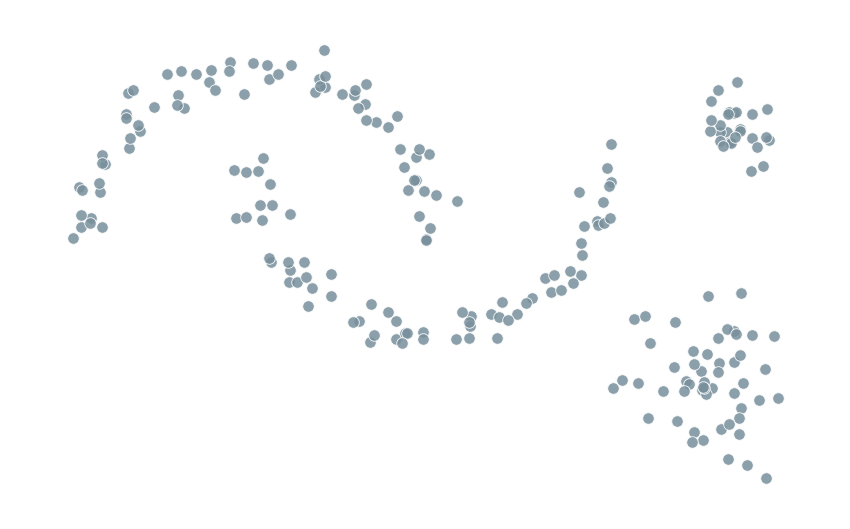
There are no colors and no labels in Figure 1.1. A method built around centroids would need to guess how many centres to place and where. A method built around a graph asks a more local question first: which points sit near which other points?
1.3 Building a neighbour graph
Pick one point and connect it to its nearest neighbours.
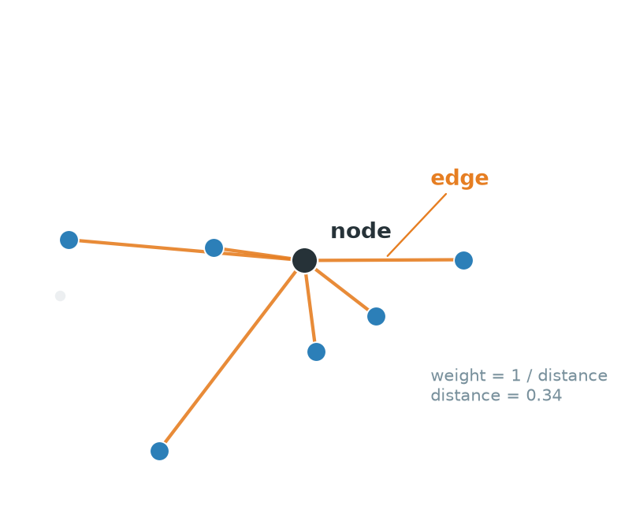
Figure 1.2 shows this for a single point. The black point is a node. Each orange line connecting it to one of its six nearest neighbours is an edge. A natural choice of weight is some decreasing function of distance, so that nearby points get a strong edge and distant points get a weak one. Repeating this construction for every point in the data produces a full graph.
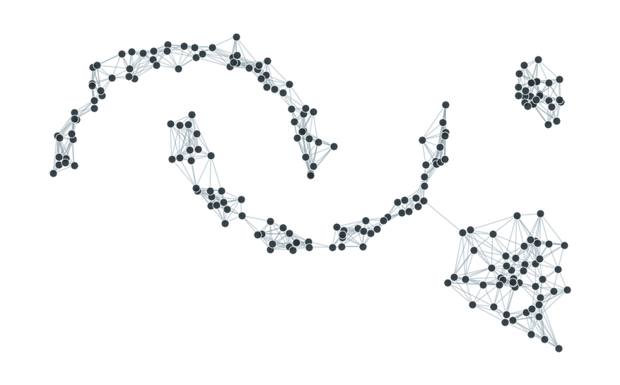
Figure 1.3 draws every edge at once. This particular construction, connecting each point to its \(k\) nearest neighbours, is called a k-nearest-neighbour graph, or KNN graph. Even without running any algorithm, the picture already shows regions where edges pile up densely and other regions where they thin out. That contrast between dense and sparse is exactly what a community detection method exploits.
1.4 From graph to communities
A person looking at Figure 1.3 can already guess roughly where the groups are, simply by eye.
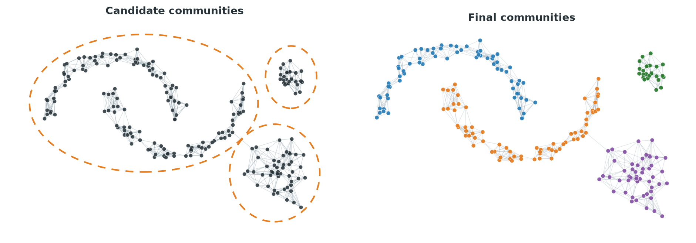
The left panel of Figure 1.4 shows a rough, human guess at candidate communities, drawn simply by eye from the density of the picture. It treats the two interleaved crescents as one blob, because from the tangle of edges alone it is not obvious that they are two separate structures. The right panel shows the communities that Leiden actually finds on this graph. It separates the two crescents from each other, in addition to picking out the small and large round groups. The final grouping used more than visual density. It used the precise pattern of which nodes connect to which, something a formal procedure can examine far more carefully than a human eye can.
1.5 The same pipeline in single-cell analysis
A single-cell RNA sequencing experiment measures the expression of thousands of genes in each of thousands of cells. Leiden clustering is one of the standard ways to group cells into candidate cell types or states, and it follows exactly the pipeline just described.
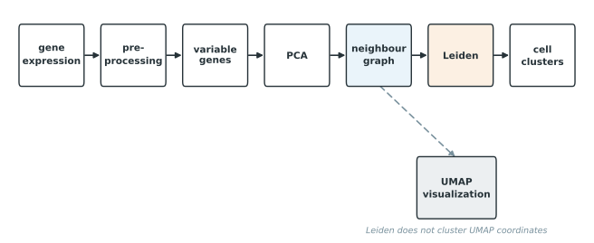
Figure 1.5 shows the usual order of operations. Raw counts are preprocessed and normalized. A subset of variable genes is chosen. Principal component analysis reduces those genes to a smaller number of coordinates. A neighbour graph is built from the PCA coordinates, and Leiden clusters that graph. UMAP sits on its own branch, built from the same neighbour graph but used only to draw a two-dimensional picture of the cells.
It is easy to assume, looking at a UMAP plot with colored clusters, that the clustering was computed on the two UMAP coordinates. It was not. Leiden receives the neighbour graph, which is normally built from many PCA dimensions, not two. Two clusters that look separated on a UMAP plot is a visualization fact. It is not the mathematical definition that Leiden actually used to decide whether two cells belong together. UMAP can distort distances and neighbourhoods in ways that make groups look more or less separated than they are in the graph that was actually clustered.
1.6 KNN and SNN graphs
Figure 1.3 used a plain KNN graph: connect each point to its \(k\) nearest neighbours. This relationship is not symmetric. Point \(A\) can count \(B\) among its nearest neighbours without \(B\) returning the favor, if \(B\) has other points that are even closer to it.
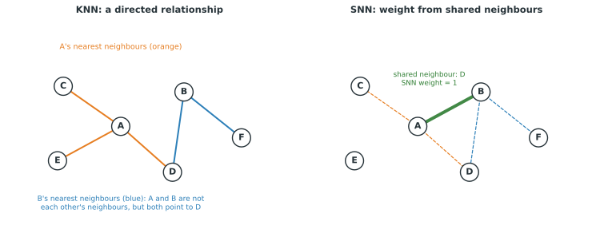
The left panel of Figure 1.6 shows this asymmetry. \(A\)’s nearest neighbours include \(C\) and \(D\). \(B\)’s nearest neighbours include \(D\) and \(F\). \(A\) and \(B\) are not each other’s nearest neighbours, yet they do share one, \(D\).
A shared nearest neighbour graph, or SNN graph, uses that overlap directly. Instead of asking only whether \(A\) and \(B\) are close, it counts how many neighbours \(A\) and \(B\) have in common and turns that count into an edge weight. The right panel of Figure 1.6 shows this: the edge between \(A\) and \(B\) is drawn because they share one neighbour, \(D\), and its weight reflects that overlap rather than the raw distance between \(A\) and \(B\).
Seurat commonly builds an SNN graph from the KNN relationships before clustering, while Scanpy stores a weighted connectivity graph that already accounts for shared and overlapping neighbourhoods. The important idea for now is only that a neighbour graph can be built in more than one way, and that the choice affects which edges exist and how strong they are. Chapter 2 returns to the specific package functions.
1.7 What is a graph community?
Step away from point clouds for a moment and look at a graph directly. Figure 1.7 shows ten nodes. Five of them, on the left, are connected to each other by every possible edge. The other five, on the right, are connected the same way. A single edge crosses between the two groups.
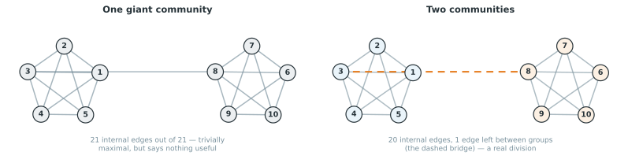
A reasonable starting definition of a community is a group of nodes with many internal connections. Both groups of five in Figure 1.7 qualify. But that definition alone is not enough. If the only goal is to maximize the number of edges counted as internal, the left panel of Figure 1.7 already wins. Treating all ten nodes as one single community makes every one of its 21 edges internal, including the weak bridge. That answer is technically maximal and completely useless. It does not distinguish anything.
The two-community answer on the right keeps 20 of the 21 edges internal and leaves only the bridge as an external edge. It gives up counting one edge in exchange for a partition that actually separates two distinguishable groups. A better definition of community detection therefore needs some way to penalize grouping observations together just because doing so is never counted against you. We will get back to this later. For now, the important idea is only that raw edge-counting is not enough, and that some kind of penalty for group size is needed to avoid the trivial answer of one giant cluster.
1.8 Leiden compared with familiar clustering methods
Before going further, it helps to place Leiden next to methods you likely already know.
K-means operates on the coordinates of the observations and favors compact groups built around a centroid. It struggles with curved or irregular shapes, and it needs the number of clusters fixed in advance.
DBSCAN looks for connected regions where points are locally dense in the chosen feature space, and separates them from sparser regions labelled as noise. Like k-means, it works directly on coordinates and distances rather than a graph.
Hierarchical clustering recursively joins or splits observations based on a distance or similarity measure, producing a tree of nested groupings rather than a single flat partition.
Spectral clustering builds a similarity graph, then uses the eigenvectors of a matrix derived from that graph to construct a new set of coordinates, and finally clusters those coordinates, often with k-means.
Louvain works directly on a graph and searches for a partition that optimizes a quality score, without ever leaving the graph to build new coordinates.
Leiden is also a graph community detection method. It follows the same overall strategy as Louvain, optimizing a quality score directly on the graph, but adds a refinement step and offers stronger guarantees about how well connected the resulting communities are. The next few sections explain what that refinement step actually does and why it is needed.
1.9 Introducing Louvain
Leiden is best understood as an improvement on an earlier algorithm called Louvain. Louvain repeats four operations.
- Start with every node in its own community.
- Move nodes, one at a time, into a neighbouring community whenever doing so improves the partition.
- Once no more beneficial moves exist, collapse each community into a single node, producing a smaller graph.
- Repeat the process on this smaller graph.
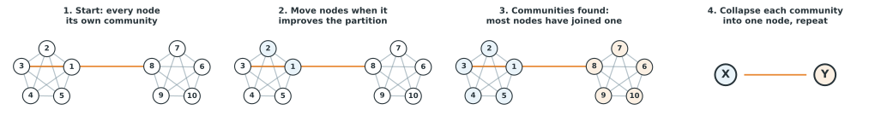
Figure 1.8 shows this sequence. Communities emerge from many small local decisions, and then the whole process repeats one level up, on a graph where each node now represents a whole community from the previous level.
1.10 Where Louvain can get stuck
Local, one-node-at-a-time moves are fast, but they have a blind spot. Consider a community made of two strongly connected regions, joined to each other by only one weak edge.
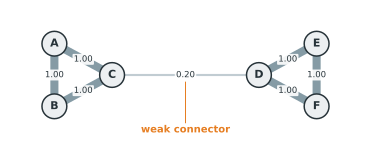
Figure 1.9 shows six nodes, \(A\) through \(F\), currently grouped as one community. \(A\), \(B\), and \(C\) are strongly connected to each other, as are \(D\), \(E\), and \(F\). The only connection between the two halves is the weak edge between \(C\) and \(D\).
Ask whether any single node benefits from leaving this community on its own. \(A\) is tightly held by its two strong edges to \(B\) and \(C\). Moving \(A\) out on its own would throw away those two strong connections in exchange for nothing, since \(A\) has no edges outside the group at all. The same is true for \(B\), \(E\), and \(F\). Even \(C\) and \(D\), sitting right at the boundary, would give up two strong internal edges each by leaving alone, and gain nothing from the single weak edge they would be leaving behind. No individual node wants to move. Local, one-node-at-a-time moves have nothing left to do.
Yet the two triangles are clearly better described as two separate communities than as one. The weak bridge should not be enough to justify treating six loosely related nodes as a single group. Louvain’s local moving step, examined one node at a time, cannot see this. Splitting \(\{A,B,C\}\) from \(\{D,E,F\}\) requires moving three nodes together, and no single one of those three moves is worth making on its own.
This is Louvain’s central weakness. Because it only ever reconsiders one node at a time, it can settle into a partition that keeps a community together for the wrong reason, namely that no individual member happens to benefit from leaving alone. In some graphs this same mechanism can leave a community internally disconnected altogether, since nothing in the local-moving step checks whether a community, once formed, is still one connected piece.
1.11 Leiden’s answer: local moving, refinement, aggregation
Leiden keeps Louvain’s overall structure but inserts an additional step.
- Local moving. Move individual nodes between communities whenever doing so improves the partition, exactly as Louvain does.
- Refinement. Within each community found by local moving, look again at its internal structure and identify smaller, well-connected pieces.
- Aggregation. Collapse each refined piece, not each original community, into a single node of a new, smaller graph.
- Repeat.
The purpose of refinement is to give the next round of local moving something better to work with. Local moving on the original six individual nodes could not split \(\{A,B,C\}\) from \(\{D,E,F\}\), because that split requires moving three nodes as a unit. Refinement identifies \(\{A,B,C\}\) and \(\{D,E,F\}\) as sensible pieces first. Aggregation then turns each of those pieces into a single node. On that new, smaller graph, a single local move can do what three coordinated moves could not.
1.12 How refinement works
Refinement starts after local moving has stopped. Its input is the coarse partition produced by that step. In this example, the input contains one coarse parent community, \(\{A,B,C,D,E,F\}\). Local moving could not improve it by moving one node at a time, but that does not mean its internal structure is good.
Leiden refines each coarse parent separately. Inside a parent, it creates a temporary partition in which every node starts as a singleton. A node may join another refined piece only when the move stays inside the same parent, passes the connection checks used by Leiden, and does not reduce the selected quality function at the chosen resolution. Among the acceptable moves, larger gains are preferred, with some randomness in the choice. Chapter 3 gives the exact calculation.
![Six panels show one refinement sequence. Panel 1 shows ABCDEF as one coarse parent after local moving. Panel 2 resets the nodes to six singleton pieces inside that parent. Panel 3 shows A joining B and D joining E along green strong edges. Panel 4 shows C joining AB and F joining DE, again along green strong edges. Panel 5 marks the weak edge of weight 0.20 between C and D with a red cross because crossing it lowers quality. Panel 6 encloses ABC and DEF in separate blue and orange boundaries as the two refined pieces.](images/10-refinement-storyboard.svg)
Figure 1.10 shows one possible sequence.
- Local moving supplies the coarse parent \(\{A,B,C,D,E,F\}\). The dashed boundary records that all six nodes currently have the same coarse community label.
- Refinement restarts the internal partition as \(A|B|C|D|E|F\). The parent boundary remains because every move is still restricted to this parent.
- The strong edge between \(A\) and \(B\) supports a quality improving move, so they form the piece \(AB\). The same happens for \(D\) and \(E\), forming \(DE\). The accepted connections are green.
- Node \(C\) has two strong connections to \(AB\), so joining that piece improves quality. Node \(F\) joins \(DE\) for the same reason. The temporary partition is now \(ABC|DEF\).
- The only connection across the two pieces is the edge from \(C\) to \(D\) with weight \(0.20\). At the settings used for this example, crossing that bridge lowers quality, so the move is rejected.
- Refinement returns \(\{A,B,C\}\) and \(\{D,E,F\}\). The blue and orange boundaries show the refined pieces.
The visiting order can change because refinement includes randomness. A different order might build the same pieces through a different sequence of accepted moves. The rules remain the same. Moves stay inside the coarse parent, must pass the connection checks, and cannot reduce quality.
The coarse partition and refined partition now serve different purposes. Refinement has not declared \(ABC\) and \(DEF\) to be final clusters. It has identified the units used to build the next graph. During aggregation, each refined piece becomes one node, while both nodes initially retain the community label of their shared coarse parent. The next local moving step can then reconsider either refined piece as a unit.
1.13 Supernodes
Refinement produced two pieces, \(X = \{A,B,C\}\) and \(Y = \{D,E,F\}\). Aggregation turns each piece into a single node of a new, smaller graph.
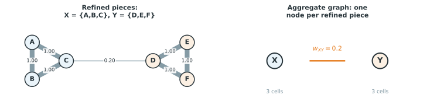
In the right panel of Figure 1.11, \(X\) and \(Y\) are supernodes. Each stands for a group of original nodes. The edge between them, with weight \(0.2\), summarizes the total connection between everything inside \(X\) and everything inside \(Y\). Internal edges become self connections on the supernodes, although those loops are omitted from the drawing. The membership of each supernode is also retained, so the final result can be mapped back to the original nodes.
This is the central mechanical trick behind Leiden. At the original level, the local moving step can only move one cell at a time. After refinement and aggregation, a single node in the new graph can represent an entire group of cells. The very same local-moving machinery, completely unchanged, can now move that whole group in one step, simply because it is now sitting behind one node instead of three. The coordinated three-node move that local moving could never find at the original level becomes an ordinary one-node move at the aggregated level.
1.14 Resolution
Every example so far has used one implicit sense of how much internal connection is enough to justify keeping nodes together. That threshold is controlled by a setting called the resolution.
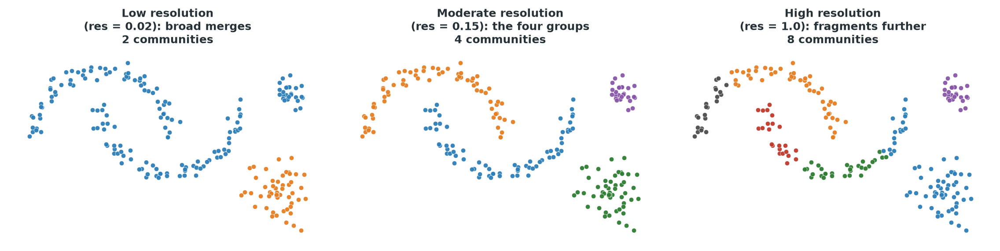
Figure 1.12 clusters the same graph three times, changing nothing but the resolution. At low resolution, the connections needed to justify a split are set high, so entire regions merge into two broad groups. At a moderate resolution, the four visually distinct groups from Figure 1.4 reappear cleanly. At high resolution, the bar for staying together is raised further, and even the round groups fracture into smaller pieces.
It is tempting to describe resolution as controlling the number of clusters directly, but that description gives the wrong intuition. Resolution changes the standard a group of nodes must meet before Leiden accepts them as sufficiently connected to be one community. A higher resolution demands stronger internal connection for a given group size before it is left ungrouped. The number of communities is a consequence of that standard, not something chosen directly.
1.15 Weighted versus unweighted graphs
Every edge so far has carried a weight. Some graphs instead treat every edge as equally strong.
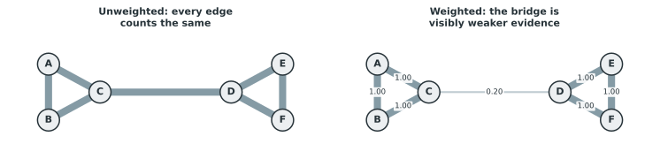
In the left panel of Figure 1.13, every edge counts the same, including the bridge between \(C\) and \(D\). In the right panel, that bridge is visibly weaker. A strong edge contributes more evidence for keeping two nodes together than a weak edge does. Leiden can use edge weights directly in its optimization, and doing so usually changes the result.
1.16 Stochasticity
Leiden is a heuristic optimization procedure, not an exact solver that is guaranteed to find the single best partition of a graph. Its refinement step deliberately introduces some randomness, choosing among several good candidate moves rather than always taking the single best one. Running Leiden twice on the same graph with the same settings can therefore produce two partitions that are very similar but not identical, unless a random seed is fixed.
If two runs of Leiden on the same data give a different number of clusters, or place a handful of boundary cells differently, that is not automatically evidence that one of the runs found the biologically correct answer and the other did not. Cluster labels themselves carry no meaning beyond marking group membership. A cluster numbered 2 in one run has no necessary relationship to a cluster numbered 2 in another.
1.17 When graph community detection is useful
Leiden is a good choice when the observations naturally form a graph, when local neighbourhood structure carries information, when clusters may have irregular shapes that a centroid-based method would miss, and when the dataset is large enough that a sparse graph representation, connecting each point only to its nearest neighbours, is more practical than working with every pairwise distance. Single-cell data, represented as a nearest-neighbour or shared-nearest-neighbour graph over PCA coordinates, fits this description well. So do datasets where a network is the original data, such as a social network or a protein interaction network, with no coordinates involved at all.
Leiden also has limitations. It always returns discrete, non-overlapping communities. If the underlying biology is a continuous progression, such as a differentiation trajectory with no natural break points, forcing Leiden to draw a boundary somewhere can create a division that does not correspond to any biological transition. The result also depends entirely on the graph it is given. A poor choice of principal components, an unsuitable number of neighbours, an uncorrected batch effect, or a distance metric that does not suit the data will all produce a poor graph, and Leiden has no way to recognize or repair a bad graph. It optimizes the partition of whatever graph it receives.
1.18 A short comparison with Diffusion Maps
You may encounter Diffusion Maps in the same single-cell workflow.
Diffusion Maps are a nonlinear dimensionality reduction method. They build a transition process on a graph and use its eigenvectors to summarize long-range connectivity, producing continuous coordinates that are especially useful for describing gradual, continuous structure such as a differentiation trajectory.
Leiden instead produces discrete graph communities, with no continuous coordinate attached. A dataset containing several genuinely separated cell populations is naturally described by Leiden’s discrete communities. A dataset dominated by one continuous developmental progression may be better described by diffusion coordinates, trajectory inference, or pseudotime, rather than by interpreting every boundary Leiden happens to draw as a true, discrete biological state. Neither method is universally better. They answer different questions about the same graph.
In the next chapter you get to try graph clustering in R or Python.